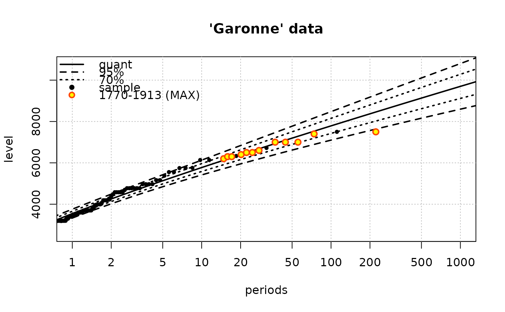
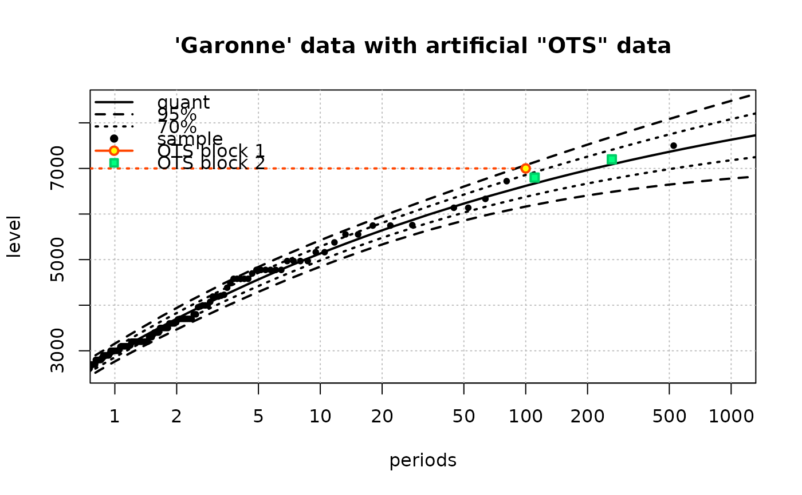

Fit a 'Renouvellement' model
Renouv.RdFit a 'renouvellement' POT model using Over the Threshold data and possibly historical data of two kinds.
Usage
Renouv(x,
threshold = NULL,
effDuration = NULL,
distname.y = "exponential",
MAX.data = NULL,
MAX.effDuration = NULL,
OTS.data = NULL,
OTS.effDuration = NULL,
OTS.threshold = NULL,
fixed.par.y = NULL,
start.par.y = NULL,
force.start.H = FALSE,
numDeriv = TRUE,
trans.y = NULL,
jitter.KS = TRUE,
pct.conf = c(95, 70),
rl.prob = NULL,
prob.max = 1.0-1e-04 ,
pred.period = NULL,
suspend.warnings = TRUE,
control = list(maxit = 300, fnscale = -1),
control.H = list(maxit = 300, fnscale = -1),
trace = 0,
plot = TRUE,
label = "",
...)Arguments
- x
-
Can be a numeric vector, an object of the class
"Rendata"orNULL. In the first case,xcontains all the levels above the threshold for a variable of interest. In the second case, most formal arguments take values in accordance with the object content, and can be by-passed by giving the formal explicitly. WhenxisNULL, the model is fitted using the data provided using theOTSandMAXformals. - threshold
-
Value of the threshold for the OT data.
- effDuration
-
Effective duration, i.e. duration of the OT period.
- distname.y
-
Name of the distribution for the excesses over the threshold. See Details below.
- MAX.data
-
Either a numeric vector or a list of numeric vectors representing historical data \(r\)-max by blocks. When a vector is given, there is only one block, and the data are the corresponding \(r\)-max observed levels where \(r\) is the vector length; the block duration is given in
MAX.effDuration. When a list is given, each list element contains the data for one block, and the effective duration are inMAX.effDuration - MAX.effDuration
-
Vector of (effective) durations, one by block MAX data.
- OTS.data
-
A numeric vector or a list of numeric vectors representing supplementary Over Threshold data in blocks. When a vector is given, there is only one block, and the data contain all the 'historical' levels over the corresponding threshold given in
OTS.threshold. The block duration is given inOTS.effDuration. When a list is given, each list element contains the data for one block, and the threshold and effective duration are inOTS.thresholdandOTS.effDuration. - OTS.effDuration
-
A numeric vector giving the (effective) durations for the OTS blocks.
- OTS.threshold
-
A vector giving the thresholds for the different OTS blocks. The given values must be greater than or equal to the value of
threshold. - fixed.par.y
-
Named list of known (or fixed) parameter values for the
y-distribution. - start.par.y
-
Named list of parameter initial values for the
y-distribution. Only used when the distribution does not belong to the list of special distributions. - force.start.H
-
Logical. When
TRUE, the values instart.par.y(which must then be correct) will be used also as starting values in the maximisation of the global likelihood : OT data and historical data. This is useful e.g. when the historical data fall outside of the support for the distribution fitted without historical data. See below the Details section. - numDeriv
-
Logical: should the hessian be computed using the
numDerivpackage (valueTRUE) or should it be taken from the results ofoptim? - trans.y
-
Transformation of the levels before thresholding (if not
NULL). This is only possible with the"exponential"valuedistname.y. The two allowed choices are"square"and"log"meaning that the fitted (exponentially distributed) values arex.OT^2-threshold^2andlog(x.OT)-log(threshold)respectively. The corresponding distributions forx.OTmay be called "square-exponential" and "log-exponential". - jitter.KS
-
Logical. When set to
TRUE, a small amount of noise is added to the "OT" data used in the Kolmogorov-Smirnov test in order to remove ties. This is done using theOTjitterfunction. - pct.conf
-
Character or numeric vector specifying the percentages for the confidence (bilateral) limits on quantiles.
- rl.prob
-
Vector of probabilities for the computation of return levels. These are used in plots (hence must be dense enough) and appear on output in the data.frame
ret.lev. - prob.max
-
Max value of probability for return level and confidence limits evaluations. This argument 'shortens' the default
probvector: values> prob.maxin the defaultprobvector are omitted. Ignored when aprobargument is given. - pred.period
-
A vector of "pretty" periods at which return level and probability will be evaluated and returned in the
preddata.frame. - suspend.warnings
-
Logical. If
TRUE, the warnings will be suspended during optimisation steps. This is useful when the parameters are subject to constraints as is usually the case. - control
-
A named list used in
optimfor the no-history stage (if any). Note thatfnscale = -1says that maximisation is required (not minimisation) and must not be changed! - control.H
-
A named list used in
optimfor the historical stage (if any). - trace
-
Level of verbosity. Value
0prints nothing. - plot
-
Draw a return level plot?
- label
-
Label to be used in the legend when
plotisTRUE.
- ...
-
Arguments passed to
plot.Renouv, e.g.main,ylim.
Details
The model is fitted using Maximum Likelihood (ML).
Some distributions listed below and here called "special" are considered in a special manner. For these distributions, it is not necessary to give starting values nor parameter names which are unambiguous.
| distribution | parameters |
exponential | rate |
weibull | shape, scale |
GPD | scale, shape |
gpd | scale, shape |
lomax | scale, shape |
maxlo | scale, shape |
log-normal | meanlog,
sdlog |
gamma | shape, scale |
mixexp2 | prob1, rate1, delta |
Other distributions can be used. Because the probability functions are then used in a "black-box" fashion, these distributions should respect the following formal requirements:
The name for the density, distribution and quantile functions must obey to the classical "prefixing convention". Prefixes must be respectively:
"d","p","q". This rules applies for distribution of thestatspackage and those of many other packages suchevd.The first (main) argument must be vectorisable in all three functions, i.e. a vector of
x,qorpmust be accepted by the density, the distribution and the quantile functions.The density must have a
logformal argument. WhenlogisTRUE, the log-density is returned instead of the density.
For such a distribution, it is necessary to give arguments names in
start.par.y. The arguments list must have exactly the required
number of parameters for the family (e.g. 2 for gamma).
Some parameters can be fixed (known); then the parameter set will be
the reunion of those appearing in start.par.y and those in
fixed.par.y. Anyway, in the present version, at least one
parameter must be unknown for the y part of the model.
Mathematical requirements exist for a correct use of ML. They are referred to as "regularity conditions" in ML theory. Note that the support of the distribution must be the set of non-negative real numbers.
The estimation procedure differs according to the existence of the different types of data: main sample, MAX and OTS.
When no historical data is given, the whole set of parameters contains orthogonal subsets: a "point process" part concerning the process of events, and an "observation" part concerning the excesses over the threshold. The parameters can in this case be estimated separately. The rate of the Poisson process is estimated by the empirical rate, i.e. the number of events divided by the total duration given in
effDuration. The "Over the Threshold" parameters are estimated from the excesses computed asx.OTminus the threshold.When historical data is given, the two parameter vectors must be coped with together in maximising the global likelihood. In this case, we begin the estimation ignoring the historical data and then use the estimates as starting values for the maximisation of the global likelihood. In some circumstances, the estimates obtained in the first stage can not be used with historical data because some of these fall outside the support of the distribution fitted. This can happen e.g. with a
distname.y = "gpd"when historical data exceedthreshold-scale/shapefor the values ofshapeandscalecomputed in the first stage.From version 2.1-1 on, it is possible to use
OTSand/orMAXdata with noOTdata by specifyingx = NULL. Yet at the time this is only possibledistname.ytakes one of the two values:"exp", or"gpd". The initial values for the parameter are then obtained by using theparIni.OTS,parIni.MAXfunctions and possibly by combining the two resulting initial parameter vectors. This possibility can be used to fit a model from block maxima or \(r\)-largest classical data but with more flexibility since the duration of the blocks may here not be constant.
The returned Renouv object contains a MAX element
concerning the distribution of block maxima in the two following
cases.
When
distname.yis"exponential"or"exp", the distribution of the maximum is Gumbel. The estimated parameters can be used with thegumbelfunction of the evd package.When
distname.yis"gpd","lomax","maxlo"or"GPD"the distribution of the maximum is a Generalised Extreme Values distribution. The estimated parameters can be used with thegevfunction of the evd package.
Value
An object with class "Renouv". This is mainly a list with the
various results.
- est.N
-
Estimate(s) for the count
"N"part. This estimate does not use the historical data, even if is available. - est.y
-
Estimate(s) for the excess
"y"part. This estimate does not use the historical data, even if available. - cov.N, cov.y
-
The (co-)variances for the estimates above.
- estimate
-
Estimate(s) for the whole set of parameters based on OT data and on historical data if available.
- ks.test
-
Kolmogorov-Smirnov goodness-of-fit test.
- ret.lev
-
A data frame containing return levels and confidence limits. The corresponding probabilities are either provided by user or taken as default values.
- pred
-
A data frame similar to
ret.lev, but with "pretty" return periods. These are taken as the provided valuespred.periodif any or are chosen as "round" multiples of the time unit (taken fromeffDuration). The periods are chosen in order to cover periods ranging from 1/10 to 10 time units. - MAX
-
A list providing the estimated distribution of the maximum of the marks over a block of unit duration. This list element only exists when this distribution can be deduced from the fit, which is the case when
distname.yis a GPD in a broad sense, see Details.
Other results are available. Use names(result) to see their
list.
Except in the the special case where distname.y is
"exponential" and where no historical data are used, the
inference on quantiles is obtained with the delta method and
using numerical derivatives. Confidence limits are unreliable for
return levels much greater than the observation-historical period.
Due to the presence of estimated parameters, the Kolmogorov-Smirnov test is unreliable when less than 30 observations are available.
References
Miquel J. (1984) Guide pratique d'estimation des probabilités de crues, Eyrolles (coll. EDF DER).
Coles S. (2001) Introduction to Statistical Modelling of Extremes Values, Springer.
Embrechts P., Klüppelberg C. and Mikosch T. (1997) Modelling Extremal Events for Insurance and Finance. Springer.
Note
The model only concerns the "Over the Threshold" part of the distribution of the observations. When historical data is used, observations should all be larger than the threshold.
The name of the elements in the returned list is indicative, and is
likely to be changed in future versions. At the time, the effect of
historical data on estimation (when such data exist) can be evaluated
by comparing c(res$est.N, res$est.y) and res$estimate
where res is the results list.
Some warnings may indicate that missing values are met during the optimisation process. This is due to the evaluation of the density at tail values. At the time the ML estimates are computed using an unconstrained optimisation, so invalid parameter values can be met during the maximisation or even be returned as (invalid) estimates.
Warning
With some distributions or in presence of historical data, the estimation can fail due to some problem during the optimisation. Even when the optimisation converges, the determination of the (numerical) hessian can be impossible: This can happen if one or more parameter is too small to compute a finite difference approximation of gradient. For instance the 'rate' parameter of the exponential distribution (= inverse mean) will be small when the mean of the excesses is large.
A possible solution is then to rescale the data e.g. dividing
them by 10 or 100. As a rule of thumb, an acceptable scaling leads to
data (excesses) of a few units to a few hundreds, but an
order of magnitude of thousands or more should be avoided and reduced
by scaling. The rescaling is recommended for the square exponential
distribution (obtained with trans = "square") since the
observations are squared.
Another possible way to solve the problem is to change the
numDeriv value.
See also
RLplot for the return level plot. See
optim for the tuning of the optimisation. The
RenouvNoEst can be used to create an object with S3
class "Renouv" from known parameters.
Examples
## Garonne data. Use a "Rendata" object as 'x'. Historical data are used!
fit <- Renouv(x = Garonne, distname = "weibull", trace = 1,
main = "'Garonne' data")
#> processing the 'Rendata' object 'x'
#>
#> Number of obs > threshold 151
#> o Estimate of the process rate (evt/bloc length) 2.323077
#> o Estimated values / covariance for the exceedances part
#> shape scale
#> 1.139363 1145.889216
#> shape scale
#> shape 0.005149901 1.993273
#> scale 1.993272635 7470.100657
#>
#> Take into account MAX historical data of time-length 143.09 units
#> o Optimisation
#> o Initial values for 2nd stage optimization
#> shape scale
#> 1.139363 1145.889216
#> parscale used in 'control.H'
#> 75%
#> 1 1000
#> ndeps used in 'control.H'
#> [1] 1e-06 1e-06
#> fnscale used in 'control.H'
#> [1] -1
#> Fixed parameters in historical optimization and hessian
#> lambda shape scale
#> FALSE FALSE FALSE
#> Maximising parameter
#> shape scale
#> 1.139296 1190.400483
#> Maximised log-likelihood
#> [1] -1196.906
#> Hessian
#> [,1] [,2] [,3]
#> [1,] -29.00244229 15.5051926 -0.0130855252
#> [2,] 15.50519261 -410.4807227 0.2028223362
#> [3,] -0.01308553 0.2028223 -0.0002574086

summary(fit)
#> o Main sample 'Over Threshold'
#> . Threshold 2500.00
#> . Effect. duration 65.00 years
#> . Nb. of exceed. 151
#>
#> o Estimated rate 'lambda' for Poisson process (events): 2.37 evt/year.
#>
#> o Distribution for exceedances y: "weibull", with 2 par. "shape", "scale"
#>
#> o No transformation applied
#>
#> o Coefficients
#>
#> Estimate Std. Error t value
#> lambda 2.370700 0.18821219 12.59589
#> shape 1.139296 0.06328141 18.00365
#> scale 1190.400483 80.02387531 14.87557
#>
#> Degrees of freedom: 3 (param.) and 163 (obs)
#>
#> o Inference method used for return levels
#> "Delta method"
#>
#> o Return levels
#>
#> period quant L.95 U.95 L.70 U.70
#> 30 10 5773 5415 6131 5584 5963
#> 33 20 6395 5950 6839 6160 6629
#> 36 50 7195 6618 7773 6890 7501
#> 38 100 7789 7100 8477 7424 8153
#> 41 200 8373 7565 9180 7946 8800
#> 43 300 8710 7831 9590 8245 9175
#> 44 400 8949 8017 9880 8456 9441
#> 46 500 9133 8160 10105 8618 9647
#> 47 600 9282 8276 10289 8750 9814
#> 48 700 9408 8373 10444 8861 9956
#> 49 800 9518 8457 10578 8957 10078
#> 51 900 9614 8531 10696 9041 10186
#> 52 1000 9699 8597 10802 9116 10283
#>
#>
#> o 'MAX' historical info: 1 blocks, 12 obs., total duration = 143.09 years
#>
#> * block 1, 143.09 years, 12 obs.
#>
#> 7500, 7400, 7000, 7000, 7000, 6600, 6500, 6500, 6400, 6300, 6300, 6200
#>
#> o no 'OTS' historical data
#>
#> o Kolmogorov-Smirnov test
#>
#> Asymptotic one-sample Kolmogorov-Smirnov test
#>
#> data: OTjitter(y.OT, threshold = 0)
#> D = 0.10802, p-value = 0.05898
#> alternative hypothesis: two-sided
#>
#>
## generates a warning because of the ties
fit2 <- Renouv(x = Garonne, distname = "GPD",
jitter.KS = FALSE,
threshold = 2800, trace = 1,
main = "'Garonne' data with threshold = 2800 and GPD fit")
#> processing the 'Rendata' object 'x'
#>
#> Number of obs > threshold 119
#> o Estimate of the process rate (evt/bloc length) 1.830769
#> o Estimated values / covariance for the exceedances part
#> scale shape
#> 1158.6426355 -0.1131778
#> scale shape
#> scale 23744.9148 -11.85919779
#> shape -11.8592 0.00939199
#>
#> Take into account MAX historical data of time-length 143.09 units
#> o Optimisation
#> o Initial values for 2nd stage optimization
#> scale shape
#> 1158.6426355 -0.1131778
#> parscale used in 'control.H'
#> 75%
#> 1000 1
#> ndeps used in 'control.H'
#> [1] 1e-06 1e-06
#> fnscale used in 'control.H'
#> [1] -1
#> Fixed parameters in historical optimization and hessian
#> lambda scale shape
#> FALSE FALSE FALSE
#> Maximising parameter
#> scale shape
#> 1293.7155458 -0.1613623
#> Maximised log-likelihood
#> [1] -991.0444
#> Hessian
#> [,1] [,2] [,3]
#> [1,] -37.06678421 -0.0165187809 -33.1950619
#> [2,] -0.01651878 -0.0002367487 -0.4550967
#> [3,] -33.19506190 -0.4550966706 -1062.0175205
#> Warning: ties should not be present for the one-sample Kolmogorov-Smirnov test
## use a numeric vector as 'x'
fit3 <-
Renouv(x = Garonne$OTdata$Flow,
threshold = 2500,
effDuration = 100,
distname = "GPD",
OTS.data = list(numeric(0), c(6800, 7200)),
OTS.effDuration = c(100, 150),
OTS.threshold = c(7000, 6000),
trace = 1,
main = "'Garonne' data with artificial \"OTS\" data")
#> Number of obs > threshold 151
#> o Estimate of the process rate (evt/bloc length) 1.51
#> o Estimated values / covariance for the exceedances part
#> scale shape
#> 1241.421464 -0.136232
#> scale shape
#> scale 19496.458520 -8.603624361
#> shape -8.603624 0.006151174
#>
#> Take into account OTS historical data on time-length 250 units
#> o Optimisation
#> o Initial values for 2nd stage optimization
#> scale shape
#> 1241.421464 -0.136232
#> parscale used in 'control.H'
#> 75%
#> 1000 1
#> ndeps used in 'control.H'
#> [1] 1e-06 1e-06
#> fnscale used in 'control.H'
#> [1] -1
#> Fixed parameters in historical optimization and hessian
#> lambda scale shape
#> FALSE FALSE FALSE
#> Maximising parameter
#> scale shape
#> 1212.0996888 -0.1658686
#> Maximised log-likelihood
#> [1] -1170.334
#> Hessian
#> [,1] [,2] [,3]
#> [1,] -69.68831050 -0.0159618171 -35.9669755
#> [2,] -0.01596182 -0.0002892484 -0.5715069
#> [3,] -35.96697546 -0.5715068629 -1480.0838254

## Add historical (fictive) data
fit4 <- Renouv(x = Garonne$OTdata$Flow,
threshold = 2500,
effDuration = 100,
distname = "weibull",
fixed.par.y = list(shape = 1.1),
OTS.data = list(numeric(0), c(6800, 7200)),
OTS.effDuration = c(100, 150),
OTS.threshold = c(7000, 6000),
trace = 0,
main = "'Garonne' data with artificial \"OTS\" data")
##============================================================================
## use the 'venice' dataset in a r-largest fit from the 'evd' package
##============================================================================
## transform data: each row is a block
MAX.data <- as.list(as.data.frame(t(venice)))
## remove the NA imposed by the rectangular matrix format
MAX.data <- lapply(MAX.data, function(x) x[!is.na(x)])
MAX.effDuration <- rep(1, length(MAX.data))
## fit a Renouv model with no OT data. The threshold
## must be in the support of the gev distribution
u <- 66
fit.gpd <- Renouv(x = NULL,
MAX.data = MAX.data,
MAX.effDuration = MAX.effDuration,
distname.y = "GPD",
threshold = u,
numDeriv = FALSE,
trace = 0,
plot = FALSE)
if (FALSE) { # \dontrun{
require(ismev)
## compare with results from the ismev package
fit.gev <- rlarg.fit(venice)
est.gev <- fit.gev$mle
names(est.gev) <- c("loc", "scale", "shape")
## transform the 'gev' fit into a Ren parameter set.
cov.gev <- fit.gev$cov
rownames(cov.gev) <- colnames(cov.gev) <- c("loc", "scale", "shape")
trans <- gev2Ren(est.gev,
threshold = u,
vcovGev = cov.gev)
est <- cbind(ismev = trans, RenextLab = coef(fit.gpd))
colnames(est) <- c("ismev", "RenextLab")
print(est)
## fill a 3d array with the two gpd covariance matrices
cov2 <- attr(trans, "vcov")[c(1, 3, 4), c(1, 3, 4)]
## covariance
covs <-
array(dim = c(2, 3, 3),
dimnames = list(c("ismev", "RenextLab"),
colnames(fit.gpd$cov), colnames(fit.gpd$cov)))
covs["ismev", , ] <- cov2
covs["RenextLab", , ] <- fit.gpd$cov
print(covs)
} # }